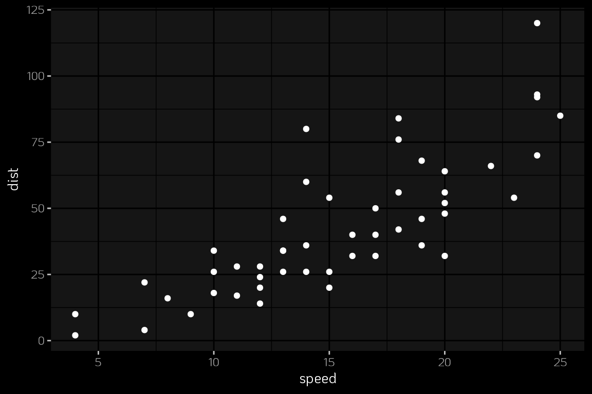
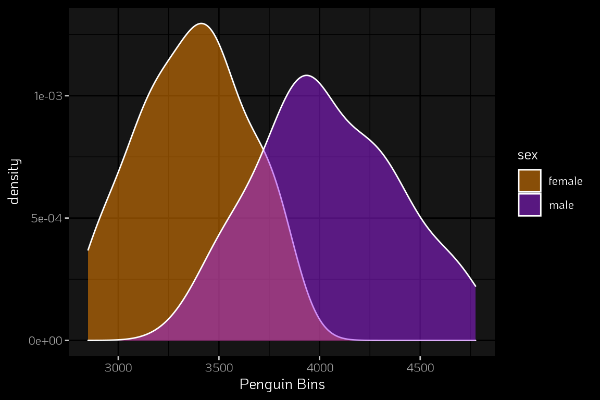

RMarkdown Template Structure - RStudio
This is an R Markdown document, See http://rmarkdown.rstudio.com.
When you click the Knit button a document will be generated that includes both content as well as the output of any embedded R code chunks within the document. You can embed an R code chunk like this:
Embed r-code inlie with simply syntax 4
You can also embed plots, for example:
ggplot(cars %>% tibble, aes(speed, dist)) +
geom_point() 
For this python example, I have adapted the code as seen in an article by Ekta Sharma on the Palmer Penguins dataset, go and check it out!
# install SciPy
import pandas
import os
# add the R df into Python
penguins_df = r.penguin_dfInstead of skimr we can use describe().
penguins_df[["species", "sex", "body_mass_g", "flipper_length_mm", "bill_length_mm"]].dropna().describe(include='all')## species sex body_mass_g flipper_length_mm bill_length_mm
## count 333 333 333.000000 333.000000 333.000000
## unique 3 2 NaN NaN NaN
## top Adelie male NaN NaN NaN
## freq 146 168 NaN NaN NaN
## mean NaN NaN 4207.057057 200.966967 43.992793
## std NaN NaN 805.215802 14.015765 5.468668
## min NaN NaN 2700.000000 172.000000 32.100000
## 25% NaN NaN 3550.000000 190.000000 39.500000
## 50% NaN NaN 4050.000000 197.000000 44.500000
## 75% NaN NaN 4775.000000 213.000000 48.600000
## max NaN NaN 6300.000000 231.000000 59.600000We can also explore specific statistics
The penguins split by species show a specific relationship between weight and flipper length, where the Adelie female penguins are the lighest and have the shortest flippers.
(penguins_df
.dropna()
.groupby(["species", "sex"])
.agg({"body_mass_g": "mean", "flipper_length_mm": "mean", "sex": "count"})
.sort_index()
)## body_mass_g flipper_length_mm sex
## species sex
## Adelie female 3368.835616 187.794521 73
## male 4043.493151 192.410959 73
## Chinstrap female 3527.205882 191.735294 34
## male 3938.970588 199.911765 34
## Gentoo female 4679.741379 212.706897 58
## male 5484.836066 221.540984 61Looks like the Adelie are the lightest penguin. I want to see their distribution along with the overall distribution.
smaller = penguins_df[penguins_df.species=="Adelie"].dropna()
smaller## species island bill_length_mm ... body_mass_g sex year
## 0 Adelie Torgersen 39.1 ... 3750 male 2007
## 1 Adelie Torgersen 39.5 ... 3800 female 2007
## 2 Adelie Torgersen 40.3 ... 3250 female 2007
## 4 Adelie Torgersen 36.7 ... 3450 female 2007
## 5 Adelie Torgersen 39.3 ... 3650 male 2007
## .. ... ... ... ... ... ... ...
## 147 Adelie Dream 36.6 ... 3475 female 2009
## 148 Adelie Dream 36.0 ... 3450 female 2009
## 149 Adelie Dream 37.8 ... 3750 male 2009
## 150 Adelie Dream 36.0 ... 3700 female 2009
## 151 Adelie Dream 41.5 ... 4000 male 2009
##
## [146 rows x 8 columns]Let’s move on to some plots, for the overall distributions and for just the Adelie penguins. The overall distribution of the data by species shows some overlap in body weight for Adelie/Chinstrap, but more of a separation for the Gentoo penguins.
penguin_plot <- py$smaller %>%
filter(!is.na(sex)) %>%
ggplot(aes(body_mass_g, fill = sex)) +
geom_density(color = "white", alpha = 0.5) +
scale_fill_manual(values = c("darkorange","purple")) +
labs(x = "Penguin Bins")
penguin_plot
Note that the echo = FALSE parameter was added to the code chunk to prevent printing of the R code that generated the plot.
A work by Threading Data LLC
dborba@threadingdata.com